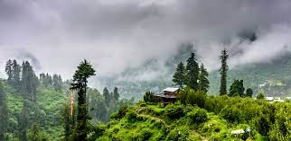
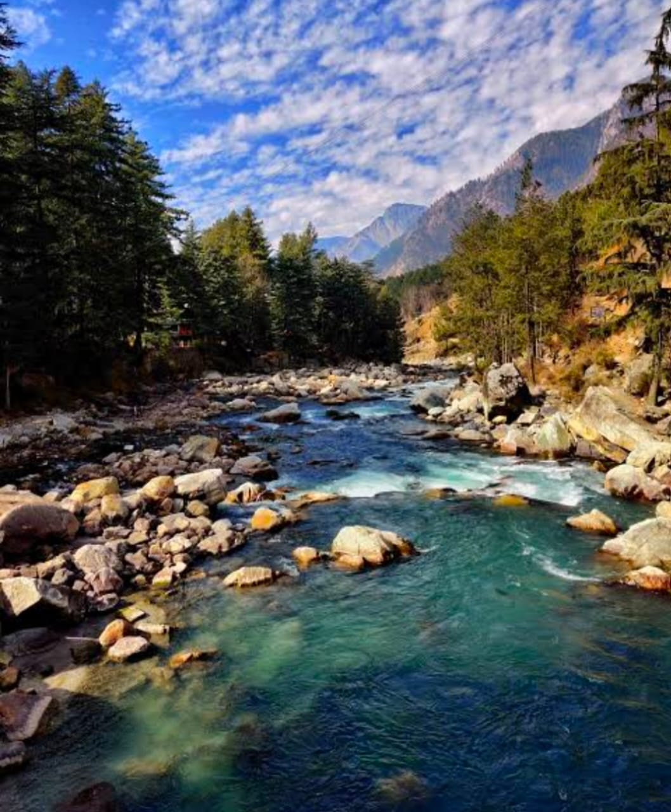
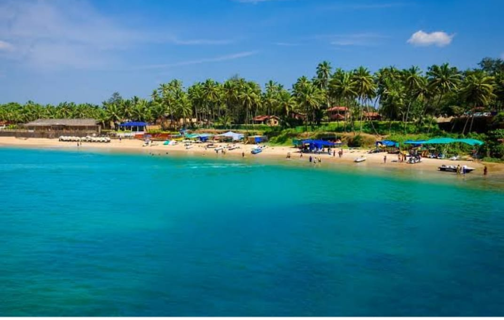

Pleasant evening at NITK private beach in Surathkal. A very peaceful and pleasant beach and a good place to watch the sunset. There is a temple and a lighthouse at this beach.
2 days are enough for visiting most of nearby places of manali. Let's suppose you reach manali by 9pm , just take rooms near mall road and next morning go for permission for rohtang pass.1500 - 2500 per day OR around Rs. 400 for a oneway trip from Old Manali to New Manali (approximately 2 to 3 km)
For a memorable Kasol trip, 3 to 4 days are enough. The trip is perfect for those looking for a relaxing getaway in North India with many places to visit in Kasol and around it.Chang or Rice Beer as it is more commonly known in most parts of Himachal Pradesh is a must have in Kasol. Request your guest house owner to get a bottle of rice beer for you. Rice beer has nearly zero alcohol content and is more of a bucket list drink
You should plan to spend around ₨2,130 ($29) per day on your vacation in Goa, which is the average daily price based on the expenses of other visitors. Past travelers have spent, on average, ₨653 ($8.81) on meals for one day and ₨354 ($4.78) on local transportation.